Overview
ZenVR began as my Georgia Tech master's thesis and grew into a real consumer VR application, startup, and long-running product effort. Over the past six years, I have been a primary driver of that evolution - setting product direction, shaping key experience concepts, guiding developer, student, and intern contributors, refining work through ongoing critique and iteration, and handling the strategic, operational, and communication work required to keep the product moving.
This page is intentionally a selective view of that work. Rather than documenting every project connected to ZenVR, it highlights a few representative examples of how I contributed through product leadership, immersive experience strategy, design critique and refinement, team guidance, and clinical translation.
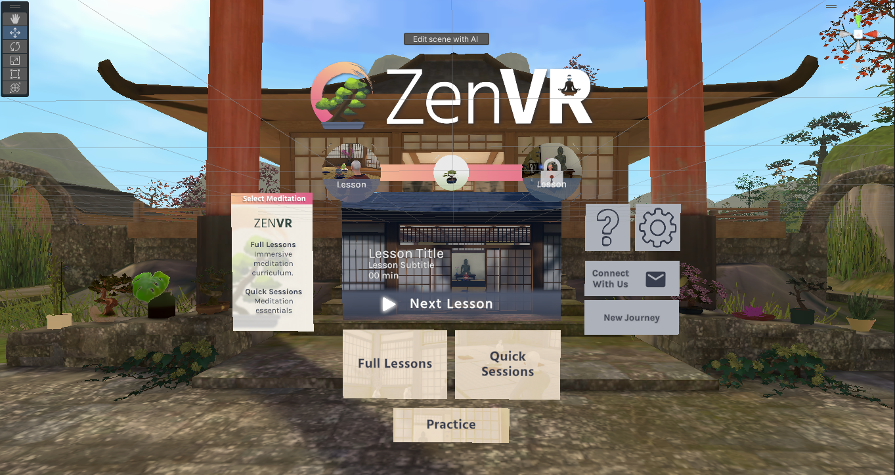
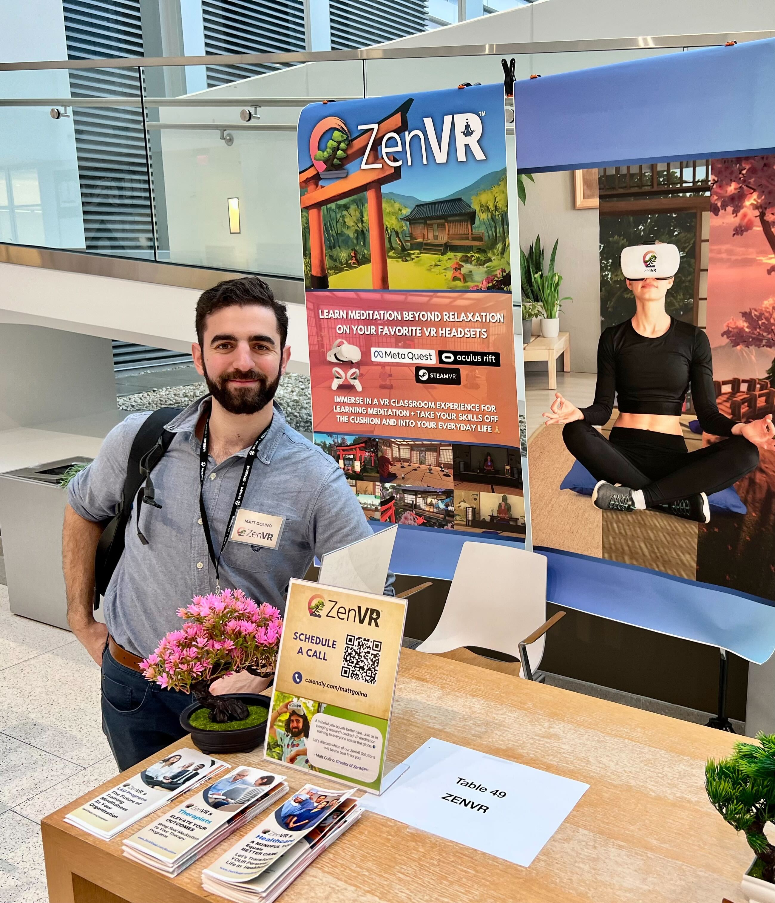
A snapshot of ZenVR as both product and public-facing venture, pairing a live in-app experience with conference presentation work.
From Thesis to Product
At the end of the thesis project, I had a choice: let ZenVR remain an academic success, or continue building it into something people could actually use. I chose the latter, launching the company through Georgia Tech's Create-X accelerator in 2020 and continuing to develop ZenVR as both a product and a business.
Over time, ZenVR became a launched consumer application across Meta, Steam, and Pico - a process that involved not only design and development, but platform submission work, release coordination, business communication, and adapting to the expectations of different ecosystems. The app generated recurring sales revenue, reached hundreds of users, earned an ESRB rating, and has remained the highest-rated VR meditation app on the Meta Quest store since launch. The sections below highlight a small selection of the work that made that growth possible.
User Interface Redesign
One of the most direct design contributions I made at ZenVR was a redesign of the main menu and navigation system. I led the effort to rethink the structure, hierarchy, and visual direction of the experience so it would feel more intuitive, motivating, and supportive of progression through the curriculum.
Before: Original UI
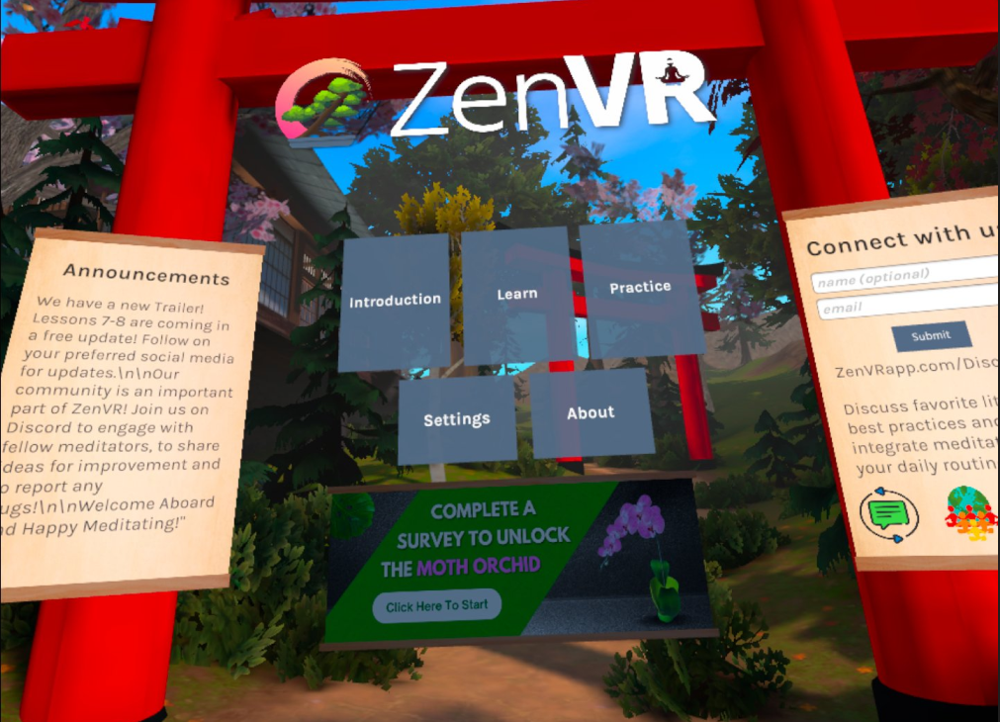
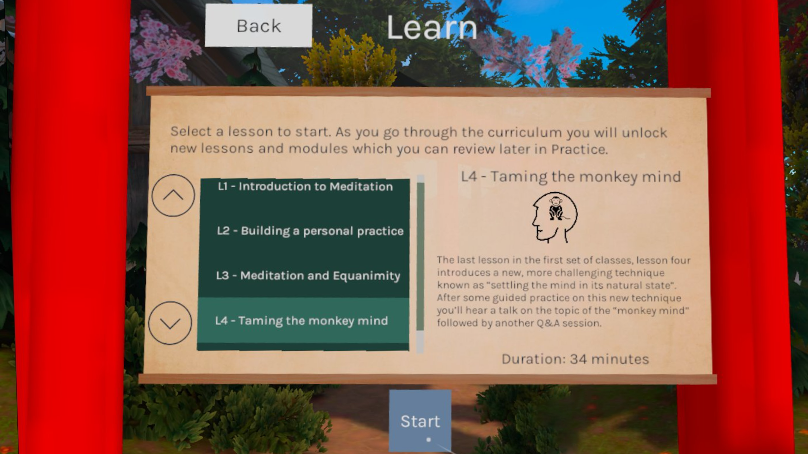
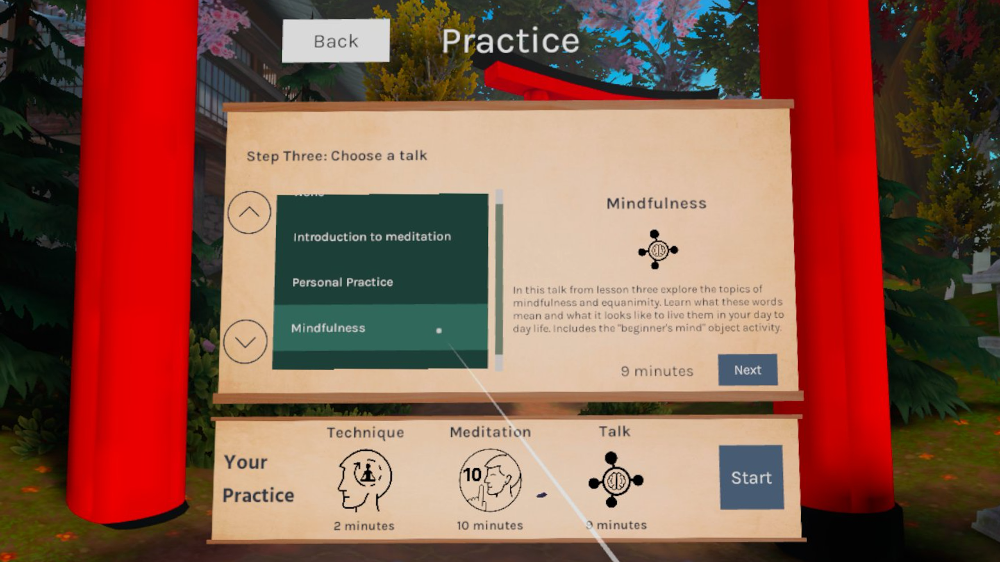
The original UI supported basic navigation, but offered little clarity, motivation, or sense of progression.
The earlier interface was functional, but it still carried the feel of a prototype-era system. It was text-heavy, visually flat, and did not do much to help users understand what was available, where to start, or how they were progressing through the experience.
Iterative Design Process
I drove the redesign through collaborative ideation and iteration with our developer, marketing lead, and student contributors. My role included defining the overall interaction model, guiding visual and navigational direction, refining the work through critique and iteration, and creating high-fidelity mockups that helped carry the final direction into implementation. The challenge was not only to make the UI more polished, but to make it feel motivating - something that invited users back into the product rather than simply getting them through a menu.
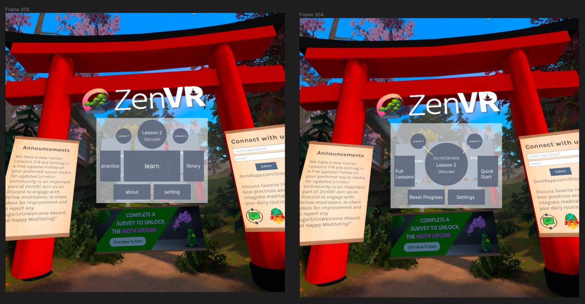
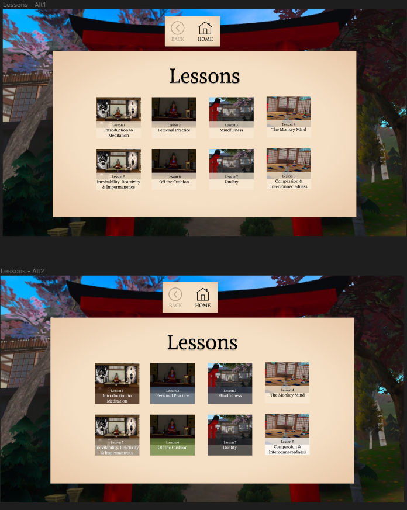
These iteration boards capture the collaborative design process behind the redesign, from broad exploration to sharper navigational direction.
Final Direction And Live Implementation
The final direction centered on clearer hierarchy, stronger visual previews, and lower-friction entry into the content. I created high-fidelity mockups in Figma for implementation and shaped two variants of the system: one for direct consumers and one for therapists and clinicians.
The consumer experience made progression more visible and rewarding, showing what a user had completed, what was next, and how the broader curriculum fit together. One detail I especially loved was the addition of unlockable bonsai trees flanking the menu - a small but meaningful way to introduce delight and a sense of earned growth into the experience.
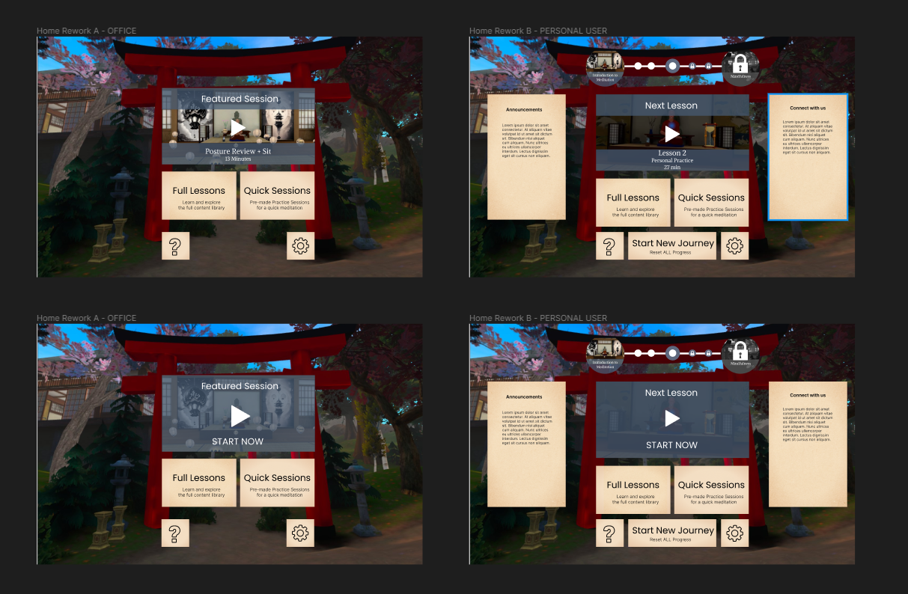
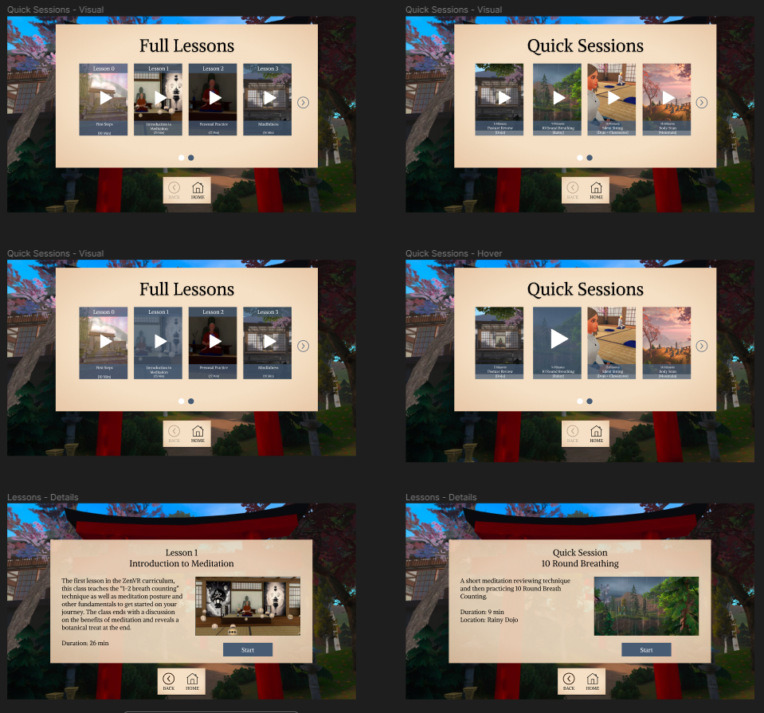
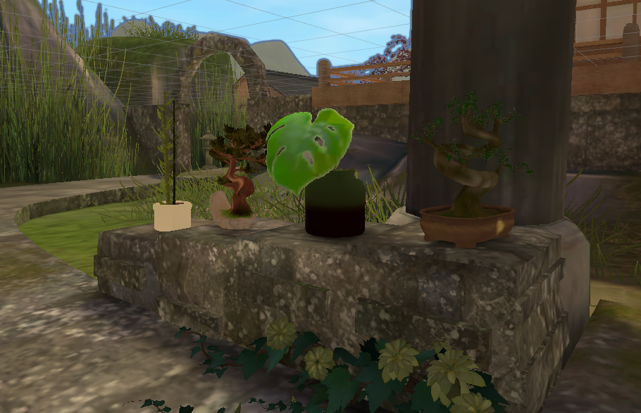
A progression from concept to live implementation, including the bonsai reward system that made curriculum progress feel more visible and rewarding.
Implemented Onboarding Improvements
In addition to the broader menu redesign, I also helped guide onboarding improvements intended to make first-time use of ZenVR clearer and less intimidating. This work focused on early user understanding - helping people grasp what ZenVR was, how to move through it, and how to begin with more confidence. It was one of several examples where product design work extended beyond the headline features and into the smaller but essential moments that shape usability and retention.
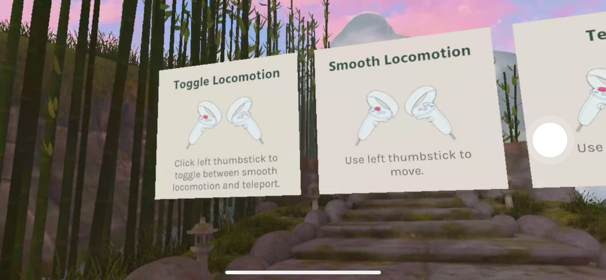
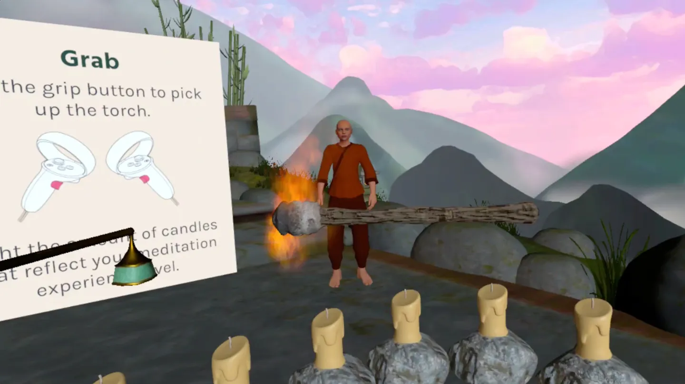
Onboarding improvements focused on helping first-time users understand what ZenVR is, how it works, and how to begin with more confidence.
Boat Rowing Meditation
Boat Rowing Meditation has been one of the longer-running experience threads within ZenVR. I guided the work across multiple phases and collaborators, including student teams, a design intern, and development interns, helping carry the concept from early exploration toward a more fully realized product experience.
My role centered on shaping the concept, defining the interaction model, and guiding collaborators through critique and iteration. Across multiple phases of the work, I helped refine the experience so it stayed emotionally coherent, embodied, and aligned with ZenVR's broader product vision.
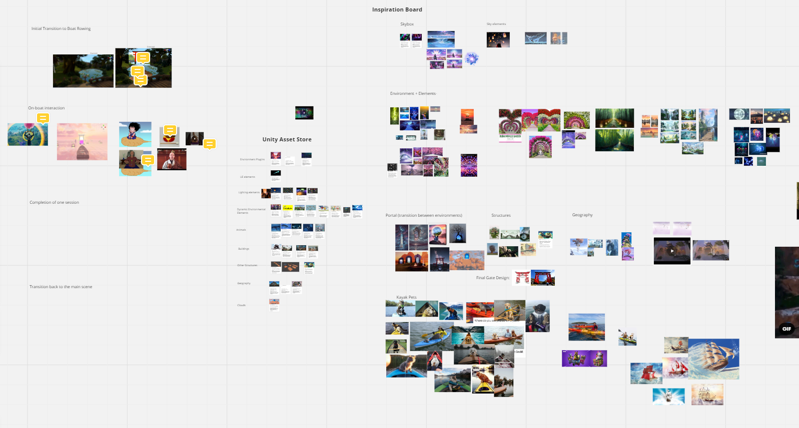


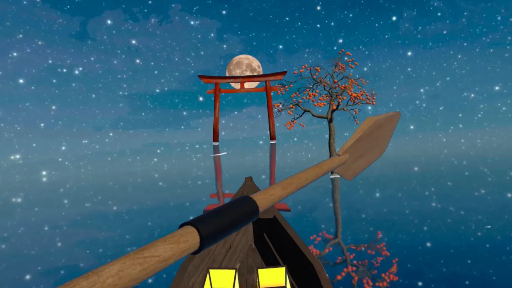
Highlights from the mood boards, user journey work, and detailed experience planning for the rowing meditation experience.
Lantern Calligraphy
Lantern Calligraphy is a newer ZenVR feature that reflects the kind of product work I most enjoy leading: creating moments that are instructional, emotionally resonant, and meaningfully tied to the broader experience. In this concept, users complete a lesson, choose a relevant Chinese idiom, trace it onto a lantern through guided calligraphy, and release it into the sky.
I shaped this feature as more than a decorative flourish. The goal was to create a closing ritual that reinforced learning, deepened reflection, and gave the session a stronger emotional arc. It is representative of the kind of work I most enjoy leading - product concepts where interaction, meaning, and emotional pacing all need to support one another.

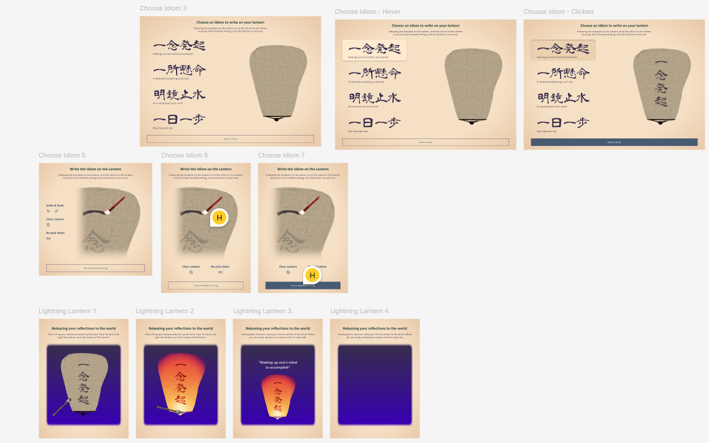
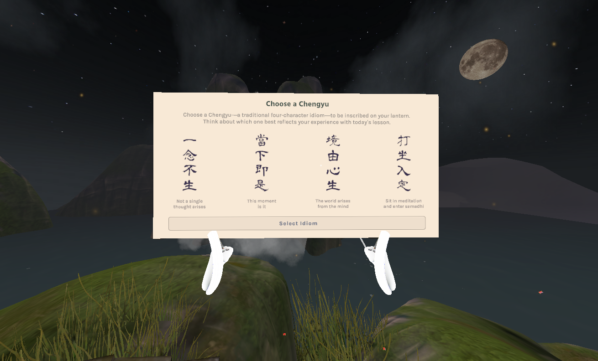
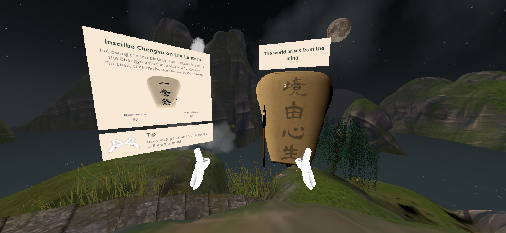
These images show a representative slice of the design process, from early storyboarding and concept framing through interface design and into a more functional feature direction within the app.
Mixed Reality Walking Meditation
As mixed reality began to open up new possibilities on devices like Quest 3, I started exploring how ZenVR could extend beyond fully virtual environments without losing its core identity. The question was not just "what can we build in MR," but "what kinds of experiences still feel true to the product's purpose and genuinely useful for users?"
This was early-stage concept work rather than a fully implemented feature. My role was to help define the product concept, shape the narrative and interaction framing, and guide a student designer through visual explorations that could make an emerging MR concept legible enough to discuss, critique, refine, and ultimately pitch for a targeted funding opportunity.
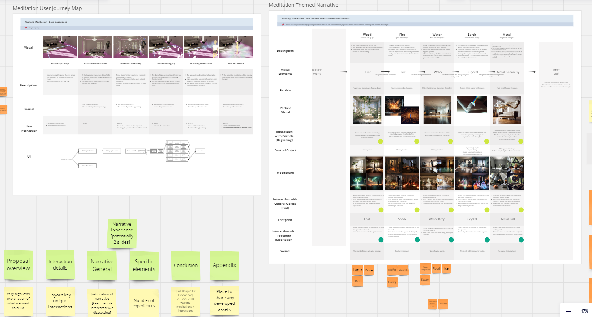
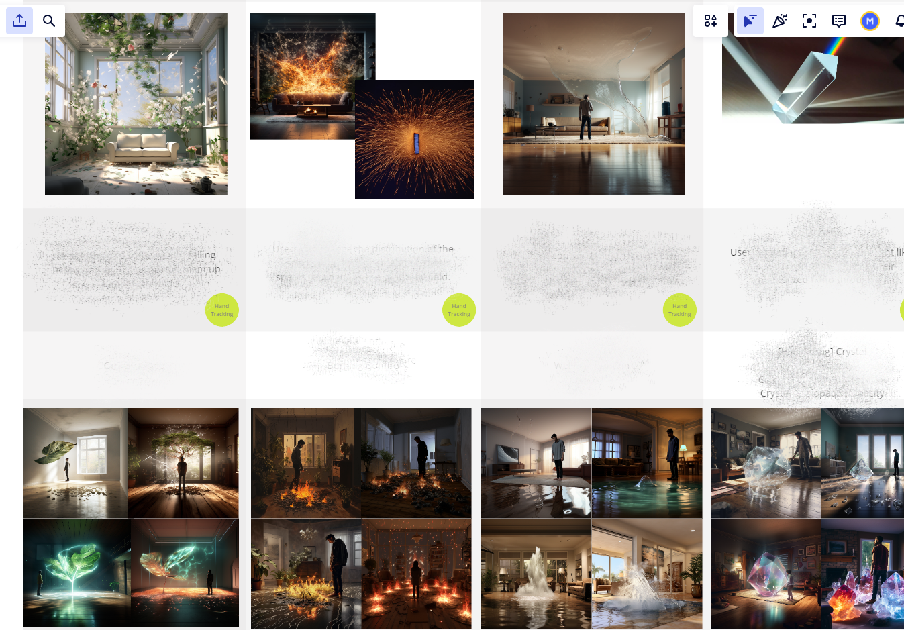
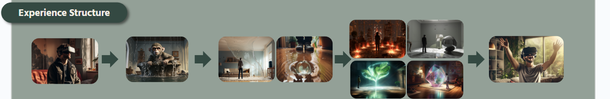
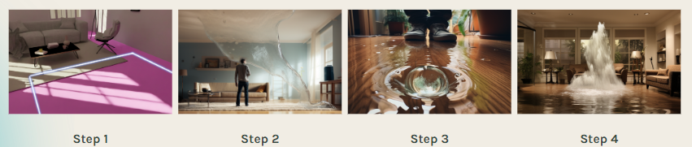
A look at the documents and image-based prototyping used to envision, communicate, and refine a still-emerging mixed reality experience. Some content is intentionally blurred to preserve unreleased details.
User Progression System
Beyond ZenVR's headline features, I also led a number of smaller and mid-sized product initiatives focused on usability and product coherence. One representative example was a broader progression system - work centered on how users understand where they are in the journey, what they have completed, and what to do next.
Because VR interactions are expensive to build before a direction is validated, this work relied heavily on concept testing through mid-fidelity mockups. My role was to define core opportunities, shape the experience concept and direction early, and work with our student designers to use screenshots, Figma, and composited visuals to communicate ideas, gather feedback, and refine the concept before development investment.
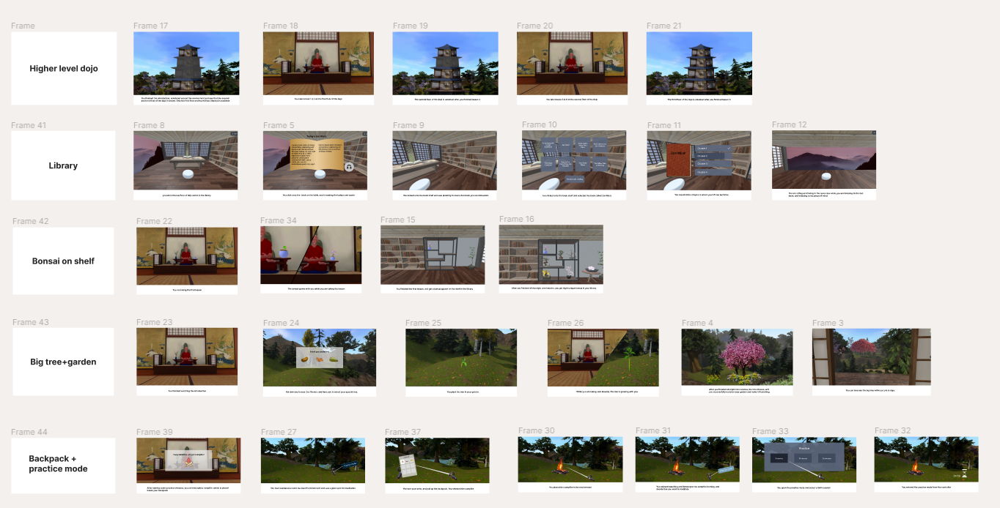
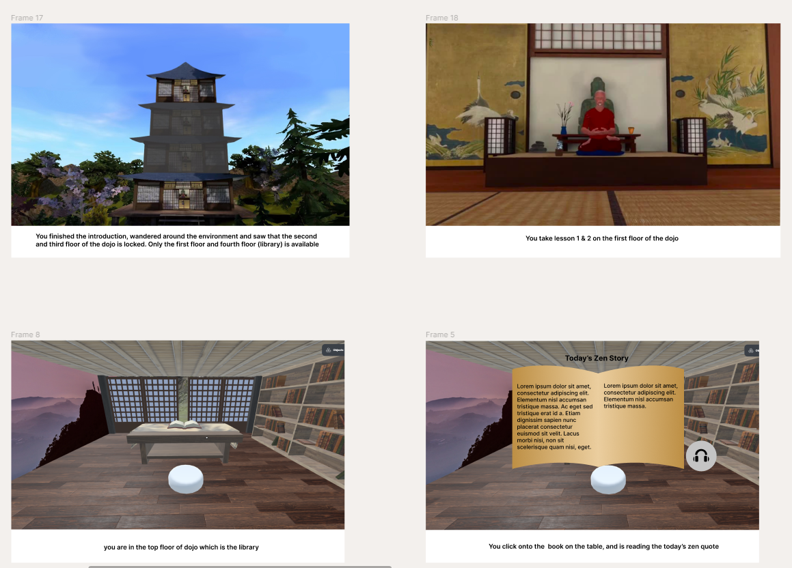
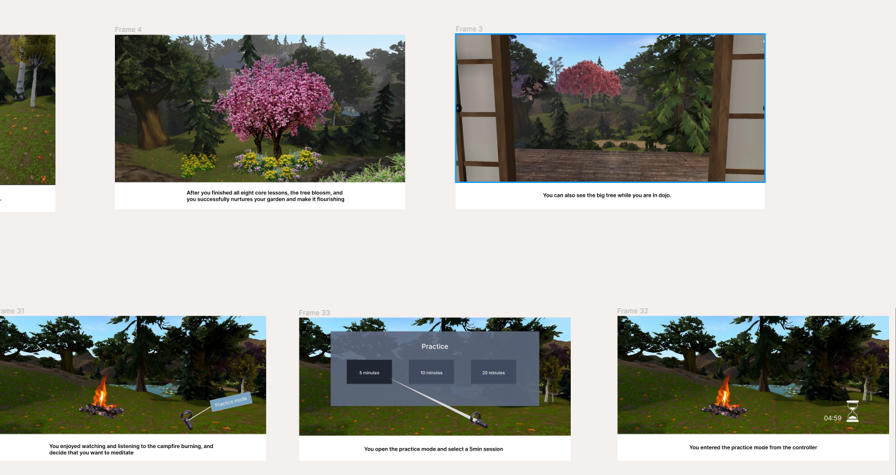
A recurring part of VR design is finding the right combination of screenshots, Figma, and Photoshop to communicate interactive 3D ideas before development begins.
Clinical and Academic Collaboration
As ZenVR matured, part of my role became leading its translation beyond consumer meditation into more clinically relevant contexts. That work required a different kind of product leadership - not just designing features, but thinking through how a VR intervention could be introduced responsibly into real care environments, adapted for adolescent populations, and supported by clinical protocols rather than consumer assumptions.
I served as PI on two NIH STTR submissions focused on extending ZenVR into inpatient adolescent mental health treatment. While those applications were not funded, they played an important role in sharpening the translational strategy behind the product and in defining what would be required to make ZenVR viable in a clinical setting. Just as importantly, the effort required sustained coordination across multiple teams and institutions - building working relationships, aligning research and product goals, managing timelines, deliverables, and budgets, and helping guide a complex grant process that involved collaborators from Satori Studios, Colorado School of Mines, and the Anschutz medical ecosystem.
In parallel, ZenVR received a small collaboration grant through Colorado School of Mines and the University of Colorado Anschutz ecosystem to support preliminary clinician-centered research on how VR meditation training could be introduced into adolescent mental health care. Using ZenVR as a design probe, the team conducted a survey with 35 clinicians and follow-up interviews with 8 clinicians to understand what future clinical protocols would need to address. The work surfaced three major areas of concern: how to screen for VR appropriateness, where VR should fit within the care pathway, and how prescription and dosage should be defined for real-world use.
I also helped write this work into a CHI 2026 poster paper, where I am second author. This work represents an important dimension of the ZenVR story because it shows how my role extended beyond feature design into translational product thinking - helping move the product toward more rigorous research, stakeholder alignment, and real-world implementation planning.


These materials reflect the CHI 2026 collaboration work, showing how the project was translated from consumer product context into clinician-centered research framing and communication.
Leadership, Strategy, and Execution
Beyond feature and experience design, I played a central product leadership role in helping ZenVR move forward. That included shaping project plans and scoped proposals, building roadmaps and feature priorities, creating decks and narratives for pitching and communication, running sprint planning and retrospectives, and representing the work publicly through conferences, booths, podcasts, and presentations.
This work mattered because ZenVR was never just a design exercise. It required sustained translation between vision and execution, research and product, and internal development and external understanding. A major part of my role was maintaining momentum, coherence, and decision-making across long timelines, changing priorities, and a mix of creative, technical, and research-driven work.
A significant part of my role also operated at the intersection of product management, creative direction, and mentorship. Across student- and intern-led initiatives, I scoped projects, defined priorities, reviewed work, unblocked teams, and helped maintain continuity of vision. In practice, that meant creating the structure, priorities, and review cadence that allowed other contributors to do strong work while keeping the product cohesive.
I also led earlier therapist-facing deployment efforts for ZenVR, which gave me hands-on experience with the operational side of real-world implementation. That work included onboarding clinicians, preparing and configuring headsets, creating support and instructional materials, and helping the product fit into actual care environments. While that distribution model did not become a durable long-term business channel, ZenVR was used for meaningful periods in therapist offices and for roughly a year in a hospital-based cancer treatment center. That experience gave me a much clearer understanding of what it takes to move a VR product into practice - not just through design, but through logistics, support, communication, and follow-through.
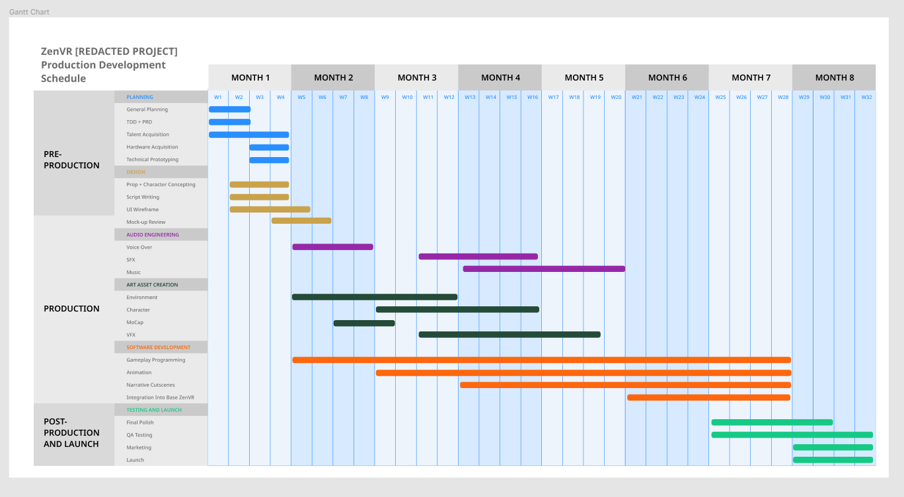
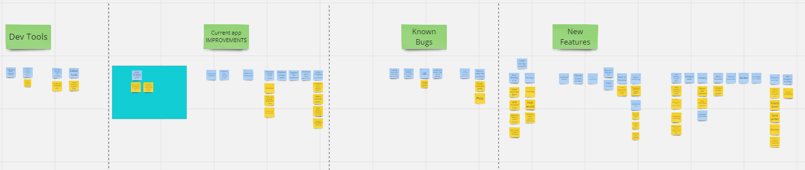
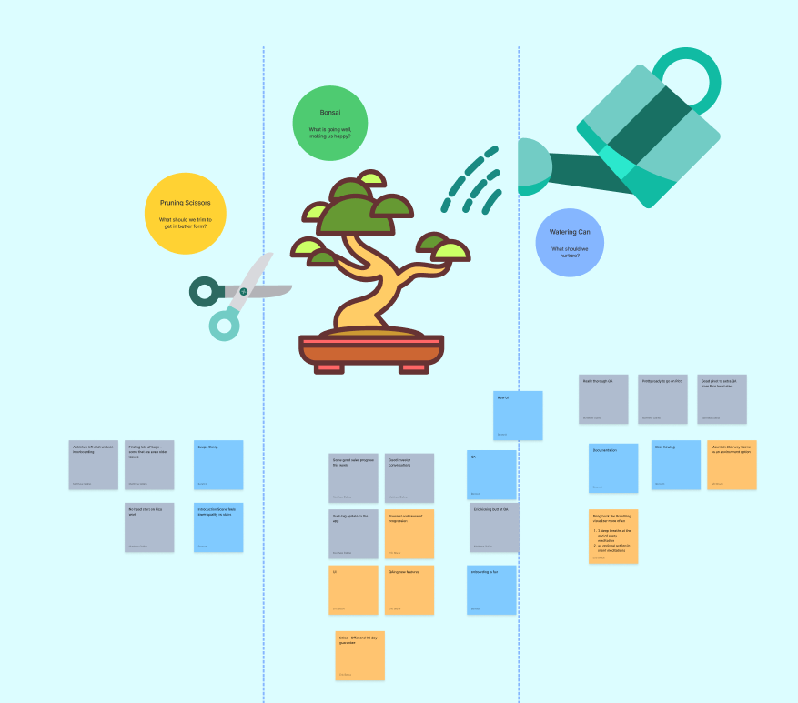
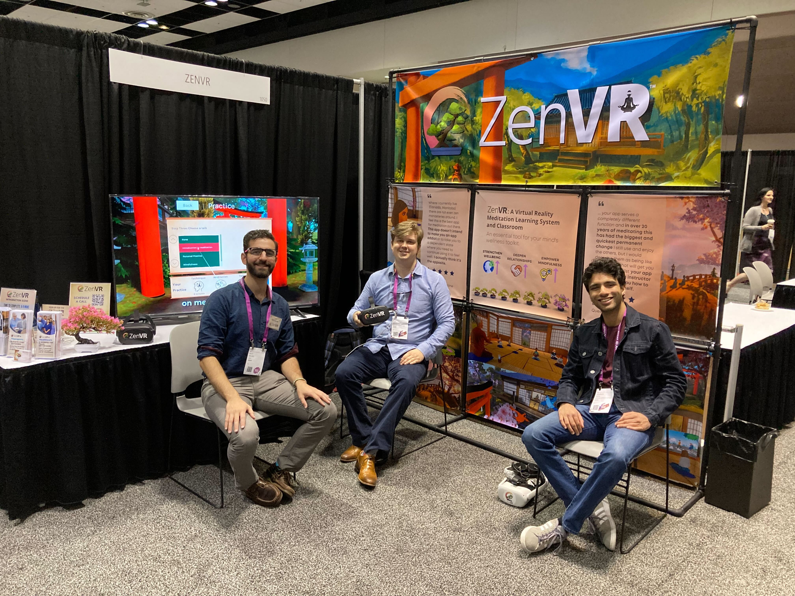
Examples of the planning, communication, and outward-facing storytelling work required to guide ZenVR as both a product and a company.
ZenVR has been one of the clearest through-lines of my work: a project where research, product design, storytelling, and leadership all had to come together over time. This page captures only part of that story, but it shows how I helped carry the work from promising concept into an evolving product.